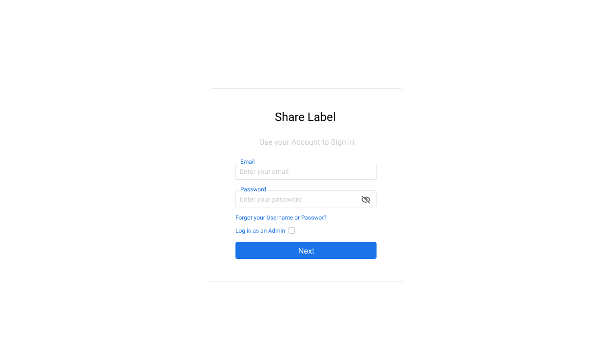

Role based Features
In order to login you must first get a user invitation email from the IT Administrator for your company or departament. After receive this email you can set a new password and access to the application.
To sign in go to the Login link and you will see the following window where you can enter your users credentials.
[Features to Specifics Roles]
